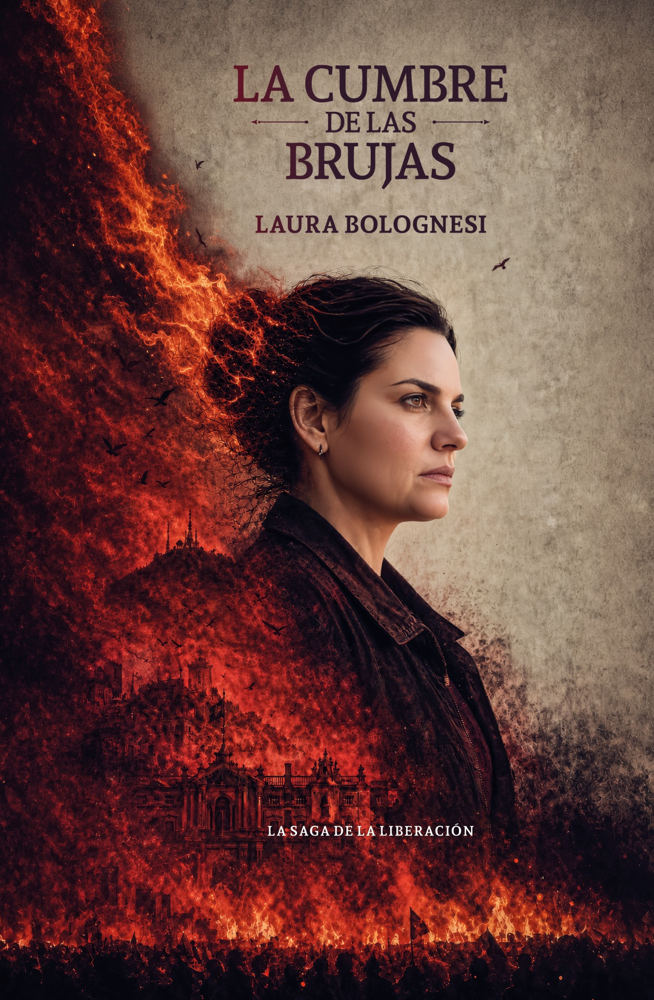

LA CUMBRE DE LAS BRUJAS · WEBAR
Preparando detector…

PRUEBA DE EXPERIENCIA AUMENTADA
Apuntá la cámara a la portada
La web reconoce el libro sin QR y reproduce un video vertical siguiendo el movimiento de la tapa.
Para la prueba, mostrá la portada completa desde otra pantalla o imprimila con buen contraste.
Buscá la portada completa dentro del encuadre